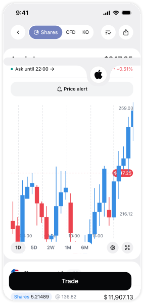
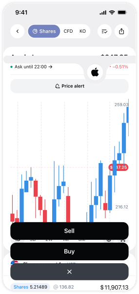
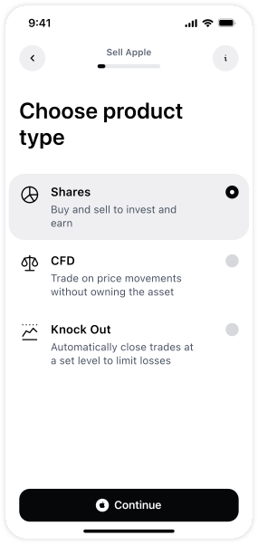
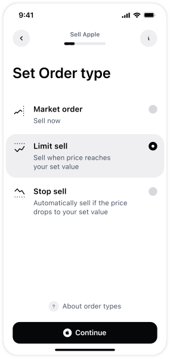
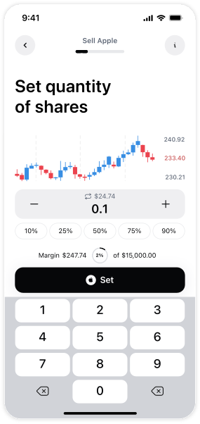
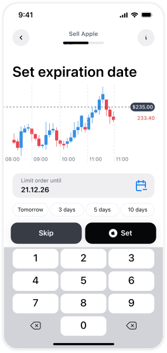

Первое решение, которое я сделала
Сделала упрощенный онбординг и пошаговый интерфейс сделки для новичков при сохранении быстрой панели для экспертов. Также была создана отдельная

ПРОБЛЕМА
Высокий барьер входа и когнитивная нагрузка приводят к отказу новичков от инвестирования, что напрямую снижает конверсию и увеличивает ранний отток





